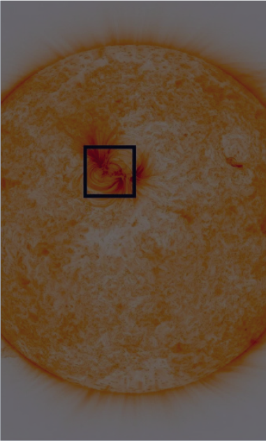
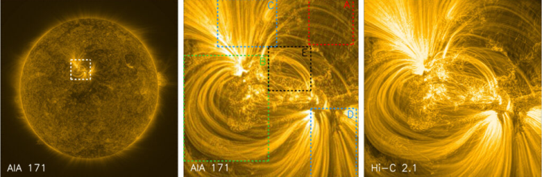
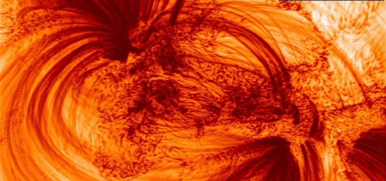

Articles

Read 6 minutes
Detailed shot of the Sun
Detailed photographs of the Sun showed filamentous structures in its magnetized atmosphere
The High-Resolution Coronal Imager space telescope sent the results of its third mission to study the solar corona - detailed images of its magnetic loops. Scientists from the University of Central Lancashire (UK) published images of the Sun made with record resolution using the NASA High-Resolution Coronal Imager telescope, which is able to recognize luminaries of structures up to 70 kilometers in size, reports The Astrophysical Journal.
The first launch of the High-Resolution Coronal Imager (Hi-C) took place in July 2012 on a Canadian Black Brant meteorological rocket. Since then, the device has carried out two more successful missions, each of which brought valuable data on the small-scale structures of the solar corona, and thanks to the third one, which started at the end of May 2018, these new images were obtained.
According to scientists, earlier some parts of the solar atmosphere looked dark and empty, they could not be examined in detail, however, new images exposed incredibly thin (for us) magnetic loops about 500 kilometers wide, filled with extremely hot plasma and piercing the corona of the Sun, the temperature of which reaches millions Kelvin.
A photograph of the Sun's disk obtained from the High-Resolution Coronal Imager / © UCLan
“Until now, astronomers could study the star closest to us in standard resolution, but the exceptional quality of the images provided by the Hi-C telescope allows us to investigate the portion of the Sun in ultra-high resolution. <...> If you watch a football match on television in standard definition, the field looks green and uniform. But watch the same game in Ultra HD, and you can even see individual grass blades. This is exactly what we got thanks to Hi-C. We can look at all the areas that make up a star’s atmosphere, ”says Professor Robert Walsh of Central Lancashire University.
Coronal loops, the sizes of which can reach several thousand kilometers, form one of the main building blocks of the outer layers of the star’s atmosphere and exist both in the calm Sun and in its active regions. The study of the structure of the loops of the star began in the 1940s. Scientists distinguish two types: short and hot, located in the active region and usually observed in x-rays, and cooler and longer loops that surround the core and are observed in ultraviolet radiation.
On the left: the full image of the Sun’s disk obtained using the AIA 171 satellite. Dotted white lines indicate the target active region. The middle photo shows the regions that have been studied: low-emission coronal loops (red), large loop loop (green), two open areas (blue) and a bunch of central loops (black) / © UCLan
According to scientists, the exact physical mechanism that these stretching hot strands creates remains unclear, so further research will focus on why they form and how their presence will help us study the nature of flares and storms in the sun that can affect life.
Bundles of coronal loops in ultra-high resolution / © UCLan
Earlier, a unique telescope for observing the Sun sent the first images of the star’s surface with unprecedented resolution, and scientists from the US National Aerospace Agency noticed a strange eruption on the surface.